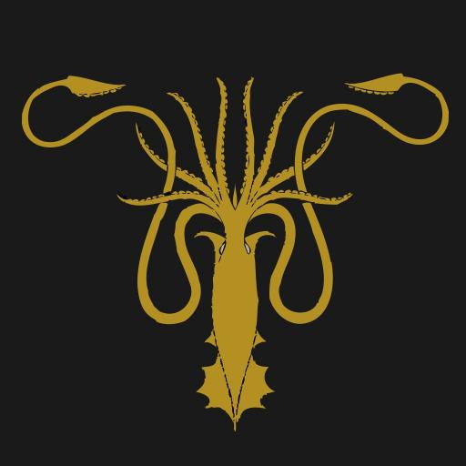
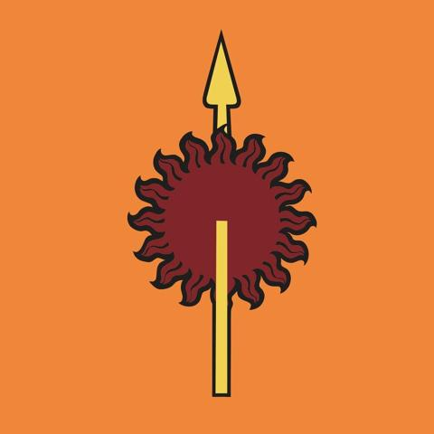

"If you would take a man's life, you owe it to him to look into his eyes and hear his final words. And if you cannot bear to do that, then perhaps the man does not deserve to die." There are houndreds of different lords and their castles in Westeros, both major and minor. Some are known for honor, some for cruelty, some for their power and some for their weakness. It would be quite an endeavor to write about every house in westeros, so this page will only cover the major lords that hold the most power in Westeros.

Fire and Blood.
House Targaryen was a noble family of Valyria before they moved to the castle at Dragonstone in westeros, where they resided for 200 years before taking over Westeros and naming themselves Kings. They founded King's Landing and built the Red Keep effectively creating the unified Seven Kingdoms. They ruled for nearly three houndred years, before Robert Baratheon's rebellion drove them out. Targaryens are known for being either great or mad: there's no middle ground, and many of them are actually insane, but many are also great.

We do not Sow.
The lords of house Greyjoy are the rulers of the Iron Islands, a small archipelago of islands that don't have very much in terms of natural resourses, so they built a great fleet to rival any other in Westeros. They are great raiders and a very proud people. Balon Greyjoy, the lord of the Iron Islands, declared himself king and fought his own rebellion against Robert Baratheon, which was put down by Robert and his lords.

Ours is the Fury.
House Baratheon was a powerful and proud house even before Robert lead his rebellion against the Iron Throne and ousted the Mad King, and once he became king himself, it became even more powerful. Tradition Baratheon holdings are the stormlands, mostly south the Kings Landings, and after the rebellion include all lands that were once Targaryen.

Hear Me Roar.
House Lannister is the rich and powerful house of the West, which is made righ by the gold mines in the nearby mountains. Tywin Lannister, the lord of the west, is an intimidating man known for his prowress and ability to lead. Jaime Lannister, Tywin's son, is a knight of the kingsguard, which is an organization of seven of the best knights in the seven kingdoms, and the slayer of Mad King Aerys. Cersei Lannister, Jaime's twin, is Robert Baratheon's queen. The house is very powerful.

Winter is Coming.
The Starks are the honorable and solid house of the north. They rule the largest of the seven kingdoms, and the most desolate. The North is where winter hits the hardest, so the Starks must be tough in order to endure, and they are. The Starks are one of the oldest houses in Westeros, they have been kings since the Age of Heros. During Robert Baratheon's rebellion, Lord Rickard Stark and his heir Brandon went to Kings Landing to speak with the Mad King, who killed them, leaving Eddard "Ned" Stark as lord. Being an old friend of Robert's, and with his family members being killed, Ned became Robert's most valuable ally.

Unbowed, Unbent, Unbroken.
Dorne is the odd one of the seven kingdoms. It was not conquered by the Targaryens at the same time as the other six, and instead joined in later, often marrying with the Targaryens. As such, the stayed loyal when so many others turned against the throne in Robert's Rebellion. They are a proud peole, and their lords are known as "Princes" instead of just lords.

Growing Strong.
House Tyrell is one of the strongest houses in the seven kingdoms, with tens of thousands of soldiers sworn to Highgarden, their castle. The Tyrells are the newest lordly family in the seven kingdoms: when the Targaryens conquered the Reach (the name for the Tyrell's holdings), the ruling family was whiped out, and the Targaryens promoted the Tyrells to great lords.
Family, Duty, Honor.
House Tully holds control over the riverlands, an extensive are full of farmers and the great river The Trident, where Robert Baratheon fought his famous battle against Rhaegar Targaryen and essentially won the war. House Tully is closely allied through marriage to House Arryn and House Stark, and the lords worked together in Robert's Rebellion.
High as Honor.
House Arryn holds command of the Vale, a mountainous area with it's capital castly at the Eyrie, a practically impregnable fortress on the side of a steep mountain. They are a very honorable house, allied to Robert Baratheon in the rebellion. Jon Arryn, lord of the Vale, dies about 15 years after Roberts Rebellion, just before the events in A Game of Thrones.